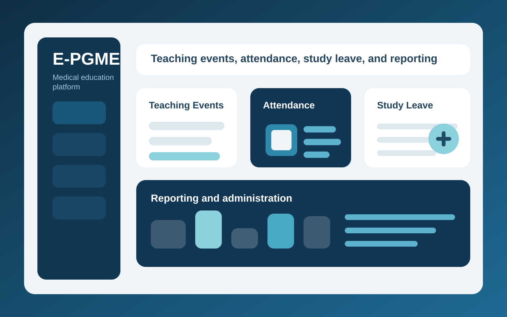

Healthcare / NHS collaboration
E-PGME
E-PGME is a postgraduate medical education platform created in collaboration with NHS partners. It helps teams manage teaching events, QR-based attendance tracking, study leave, expense workflows, and administration in one place, with reporting tools that improve visibility and reduce manual overhead.